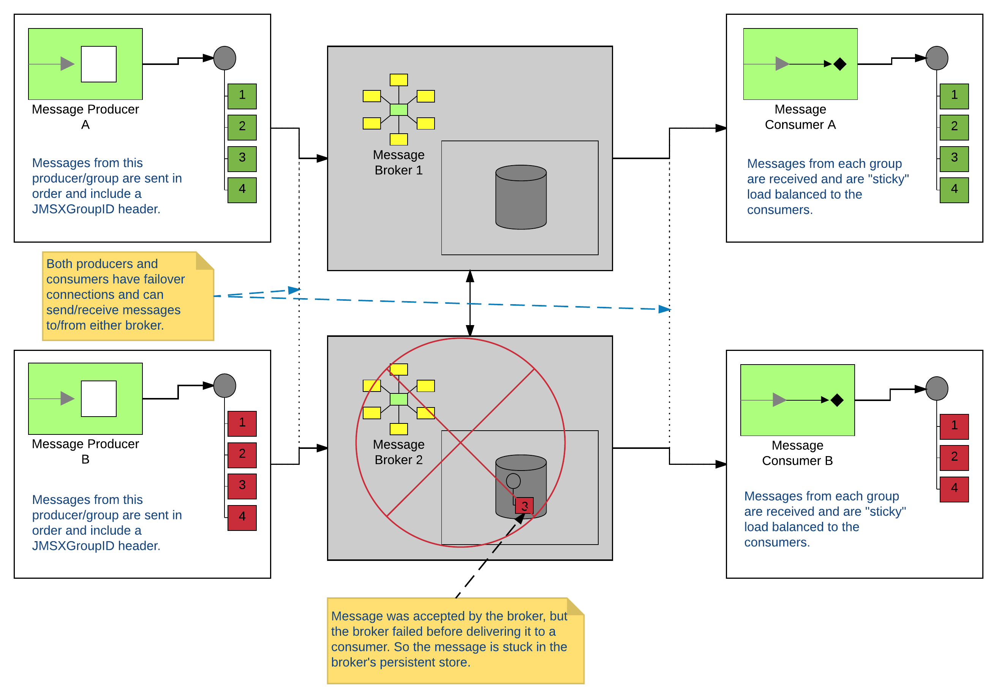

Ordered Messaging With ActiveMQ & Camel
I’ve been to several customers over the years who have a requirement to consume messages from a JMS queue in an ordered fashion. The discussions always go the same way… It starts out as a simple design, but becomes really problematic when they get to the implementation phase. Turns out, it’s really not all that simple once you try to scale. In this blog post, we’ll explore in a bit more detail and give some possible solutions.
The sample code for this blog can be found at https://github.com/joshdreagan/ordered-activemq-consumer.
Typical Architecture
So the first thing that people do is to create some test code. They know that JMS queues preserve order. So the logic goes that, if I put messages on the queue in order, I should be able to pull them off in the same order. They end up with something that looks similar to the picture below.
Run a test and you’ll see that it does indeed work. Ship it! Well… maybe not just yet…
Problems
This architecture may work in a very simple use case, but it has some serious limitations.
The first problem that you’ll encounter is that this setup is really slow. It’s a given that, in order to process messages in order, the processing must occur in a single thread. However, I will likely have more than one group that could be processed independently. So in theory, I can have multiple producers sending sequences of messages. Take a look at the illustration below.
Technically, everything still works. The single consumer will receive both sequences of messages and will process them in the order he receives them. So in the end, both groups will have their messages processed in order. But hopefully the flaw in this setup is obvious. As we scale up and add more and more producer groups, we are bottlenecked in performance by the single consumer. What happens when we try to scale the consumers?
Things no longer work. Because the broker is going to loadbalance messages to the available consumers, we have no guarantee that the sequences of messages will be processed on the same thread. Which means we can’t guarantee order. And since we can’t add more consumers, there’s no sense in scaling out and adding more brokers either. Bummer… :(
Possible Solutions
So the question is… How do we scale things out while maintaining our ability to process groups of messages in order? Well, one solution you might consider is ActiveMQ’s Message Groups. Basically, it’s a really neat feature that allows you to do “sticky” loadbalancing of messages to the available consumers. If the producers include a JMSXGroupID header on the JMS message, the broker will check to see if there is a consumer available that has already received messages with that same JMSXGroupID. If one is available, it will deliver the message to it (and all subsequent messages as well as long as it remains available). If not (either because this is the first it has seen that JMSXGroupID, or because the previous consumer has gone away), it will pick a new one. Here’s how that might look:
Problem solved right? Depends on if you only need to use a single broker. And if you want to use more than one, it depends on how strict you are about the message ordering. Most of the time, things works fine. And if “most of the time” is good enough for your requirements, then this is definitely the simplest solution. So go with it.
But let’s go ahead and discuss the corner case where it doesn’t work out so well. There are 2 things to be aware of: First, when a message is received by a broker, it is persisted in that broker’s store and exists only on that broker. Second, if a consumer goes away for any reason (ie, network blip, restart, …) the broker will pick a new recipient and start sending the messages to it instead. So let’s assume that I have a network of brokers setup (because I like to scale). And if I have a network of brokers setup, I’ll probably use some form of failover (because I like to be HA for my clients). So in this setup, what happens if we send a message to a broker, but the broker is taken down before it can deliver it. The producers would failover and keep sending messages to the next available broker. That broker would pick a consumer and continue delivering messages to it with no knowledge that the failed broker was still holding on to some messages. Now I’m back to getting my messages out of order. Here’s what that might look like:

Furthermore, what if I don’t have control over the producers? If I don’t control them, I might not be able to enforce that they set a JMSXGroupID header. So how might I go about solving this conundrum? I’m glad you asked. :)
One solution would be to use some Camel magic. Because Camel is awesome! If I use Camel as a consumer, I can have it pipe the messages into an aggregator that can just store them up in a list. Once I’ve received all of them, I can then send them to a splitter to get them back to individual messages, and then send those individual messages through a resequencer (and finally to my desired destination). My messages for each group/sequence will be processed in a single thread (assuming I don’t enable any parallel processing) and will be emitted in order. EIPs for the win! The nice thing about this solution is that I don’t have to worry about those stuck messages. As soon as the failed broker comes back online (or its slave takes over), I will receive that stuck message. And until it does, all of my other messages for that group/sequence will sit patiently and wait inside my aggregation repository. Another thing to note is that I don’t have to complete my aggregation based on some fixed number. I have all kinds of flexibility for my criteria. Take a look at the Camel docs for more info. Here’s a nice picture:
So what’s the catch? Well… technically all of the aggregation repository implementations that exist so far can’t work in a cluster or even with multiple threads. There has been some work to handle optimistic locking, but if you give it a try (or dig through the code if you don’t believe me) you’ll find that they only handle the case of 2 threads trying to do the initial insert at the same time. They still have an issue where 2 threads might be attempting to update the repository at the same time and could squash eachother’s changes. Luckily, Camel lets us write our own org.apache.camel.spi.AggregationRepository implementations. Did I mention that Camel rocks!? Take a look at the example code found here: https://github.com/joshdreagan/ordered-activemq-consumer.
Basically, I just copied most of the code from the existing org.apache.camel.processor.aggregate.jdbc.JdbcAggregationRepository implementation. But I added a version column to the underlying database tables and some logic to check and increment it (or throw an exception if it doesn’t match) on insert/update. I’m sure there’s a lot more that could be done to make it more robust (like have it implement org.apache.camel.spi.RecoverableAggregationRepository as well). But hey… this is just an example. Do your own coding damnit!
I’m sure this isn’t an exhaustive list of every possible way to solve this problem. But it’s a least a couple… And that should definitely be worth a glass of good Scotch. So if you see me at Red Hat Summit… :)
Ordered Messaging With ActiveMQ & Camel
https://blog.joshdreagan.com/2016/05/27/ordered_messaging_with_activemq_and_camel/